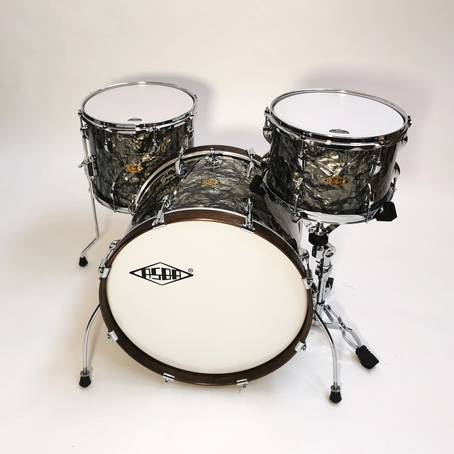

Crystal Abyss Series
Dive into the depths of rhythm with the Crystal Abyss Series. This set boasts a unique translucent shell design, allowing the inner hardware to peek through, reminiscent of the mysteries of the deep ocean. Its high-tension tuning delivers crisp snares and deep bass notes, making it an ideal choice for those looking to make a statement both visually and sonically.